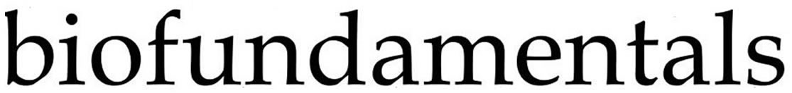

|  |
Publications2016 Klymkowsky, M.W, J.D. Rentsch, E. Begovic & M.M. Cooper. 2016. The Design and Transformation of Biofundamentals: A Non-survey Introductory Evolutionary and Molecular Biology Course. CBE Life Sci. Ed. 15: pii: ar70. DOI: 10.1187/cbe.16-03-0142 | PDF Cooper, M.M. & M.W. Klymkowsky. 2016."Chemistry, Life, the Universe and Everything: An Evidence-Based, Transformed General Chemistry Curriculum. AAAS/NSF ENGAGE meeting paper | PDF 2015Williams, L. C., S.M. Underwood, M.W. Klymkowsky & M.M. Cooper. 2015. Are Noncovalent Interactions an Achilles Heel in Chemistry Education? A Comparison of Instructional Approaches. J. Chem. Educ. 92: 1979–198. | DOI: 10.1021/acs.jchemed.5b00619 2013Cooper, M. M. & M.W. Klymkowsky. 2013. Chemistry, Life, the Universe and Everything: A New Approach to General Chemistry, and a Model for Curriculum Reform. J. Chem. Educ. 90, 1116–1122. | DOI: 10.1021/ed300456y 2012Cooper, M. M. S.M. Underwood, C.Z. Hilley & M.W. Klymkowsky. 2012. Development and Assessment of a Molecular Structure and Properties Learning Progression. J. Chem. Educ. 89, 1351–1357. | DOI: 10.1021/ed300083a |